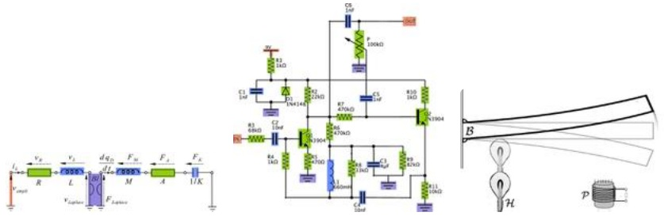
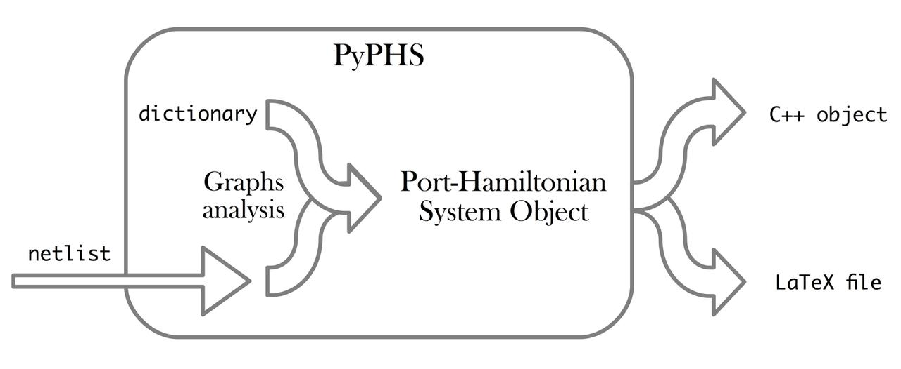
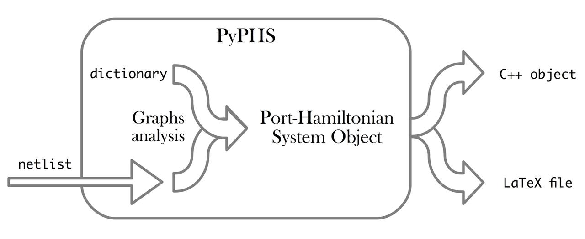
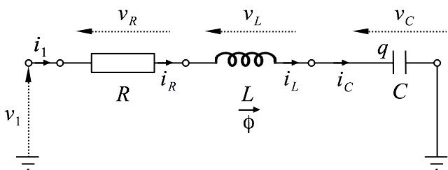

This is a companion site for the python package PyPHS, developped in the project/team S3 (Sound Signals and Systems) at STMS Research Lab (CNRS UMR 9912), hosted by IRCAM.
This software is dedicated to the treatment of passive multiphysical systems in the Port-Hamiltonian Systems (PHS) formalism.
It was initially developed between 2012 and 2016 as a part of the PhD project of Antoine Falaize, under the direction of Thomas Hélie, through a funding from French doctoral school EDITE (UPMC ED-130), and in connection with the French National Research Agency project HaMecMoPSys.
Installation
-
Using pip (recommended):
pip install pyphs
-
See the GitHub repository.
-
For Anaconda (on Mac OSX only):
conda install -c afalaize pyphs
Introduction
The Port-Hamiltonian Systems (PHS) formalism structures physical systems into
- energy conserving parts,
- power dissipating parts and
- source parts.
This guarantees a power balance is fulfilled, including for simulations based on an adapted numerical method.
- Systems are described by directed multi-graphs.
- The time-continuous port-Hamiltonian structure is build from an automated graph analysis.
- The discrete-time port-Hamiltonian structure is derived from a structure preserving numerical method.
- LaTeX description code and C++ simulation code are automatically generated.
 

Example
Consider the following serial resistor-inductor-capacitor (RLC) electronic circuit:
1. Define the Netlist
Put the following content in a text file with .net extension, (here rlc_netlist.net):
2. Perform graph analysis
Run the following python code from the netlist file directory:
import pyphs rlc = pyphs.PortHamiltonianObject(label='rlc', path='label') rlc.build_from_netlist('rlc_netlist.net')